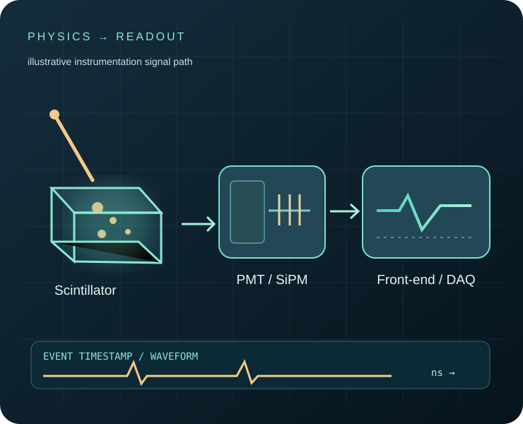
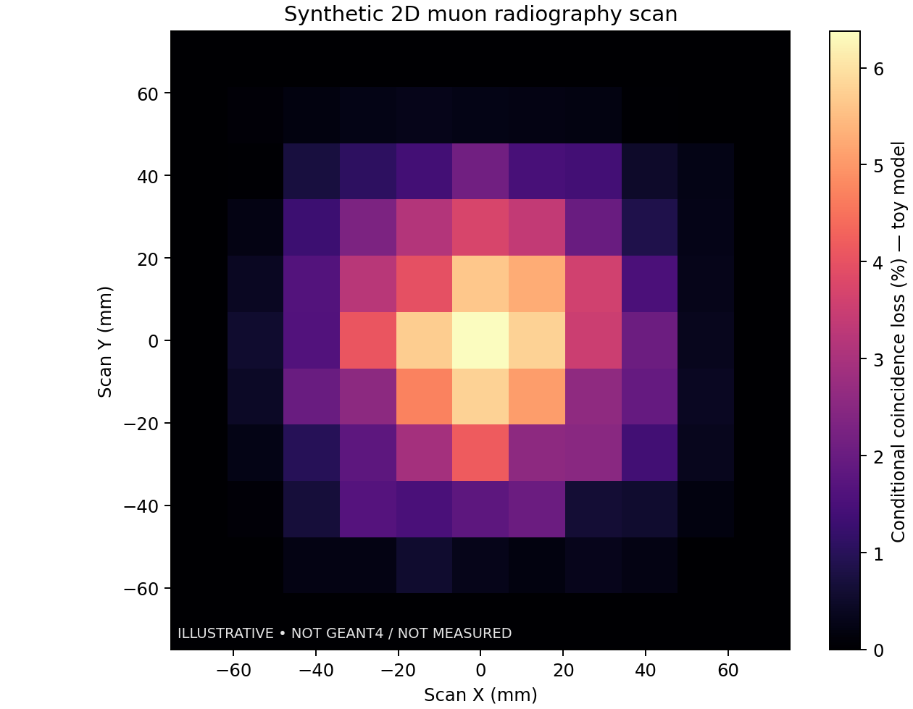
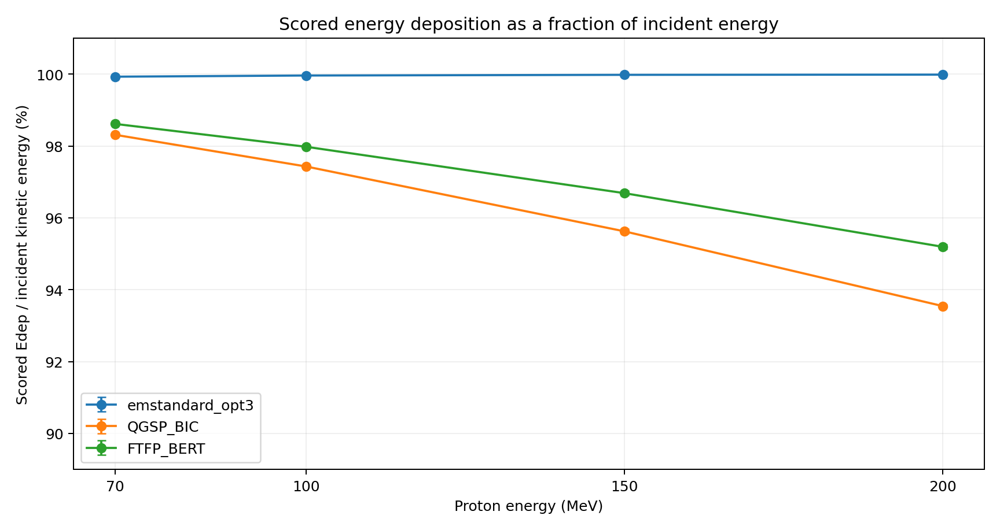
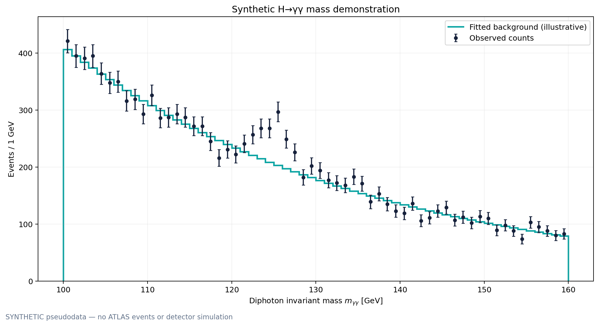
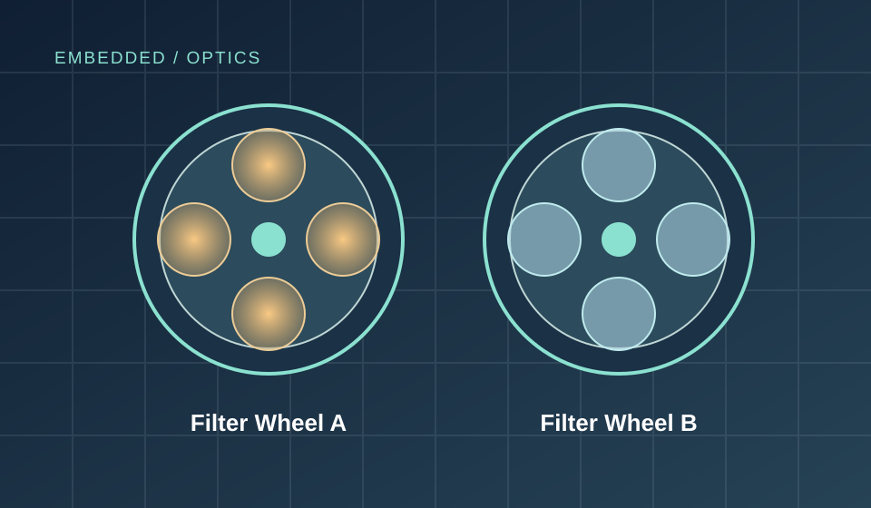
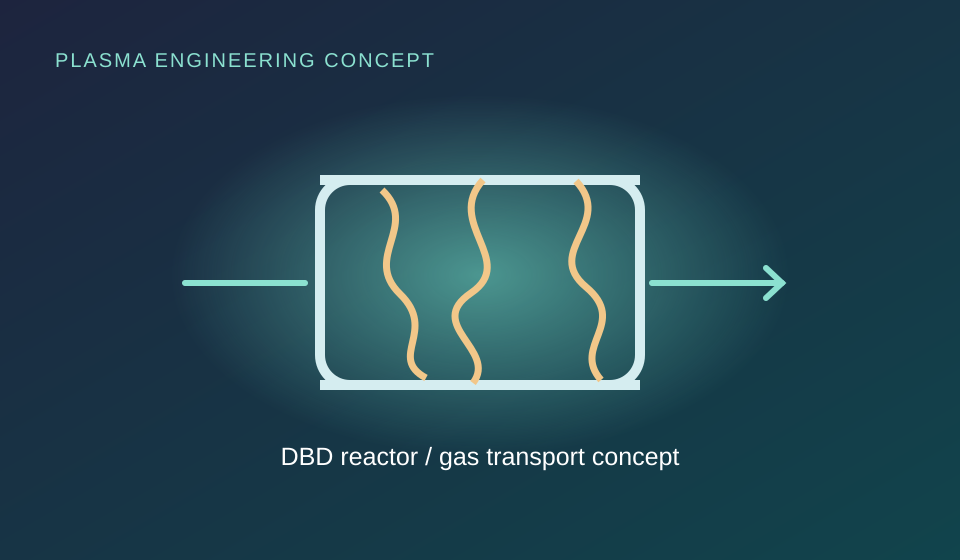

Detector physics
Scintillators, semiconductor detectors, PMTs / SiPMs, radiation interactions, response characterization and detection efficiency.
METU Physics Undergraduate
I am Burhan Karaduman. My research interests lie in detector physics, nuclear & radiation instrumentation, and the development of medical imaging systems—connecting physical models with electronics, acquisition, and analysis.

Simulated in a GATE 9.4 physics-list sensitivity campaign.
3 physics configurations × 4 energies × 3 seeded runs.
70, 100, 150 and 200 MeV in a homogeneous water phantom.
Monte Carlo benchmark milestones — not experimental detector measurements, clinical dose validation, or peer-reviewed findings. Examine the source data ↗
01 / RESEARCH FOCUS
My interests span the full chain of radiation sensing: from particle transport to photodetection, fast electronic readout, and the interpretation of quantitative imaging data.
Scintillators, semiconductor detectors, PMTs / SiPMs, radiation interactions, response characterization and detection efficiency.
Front-end electronics, pulse discrimination, coincidence timing, data acquisition, embedded systems and uncertainty-aware counting.
Detector and system concepts for PET, SPECT, gamma cameras and X-ray / CT, with attention to timing, sensitivity, readout and optimization.
Geant4 / GATE Monte Carlo, ROOT analysis, LTspice, geometry studies, measurement planning, calibration and reproducible science.
02 / SELECTED WORK
Each project makes its evidence status clear: published Monte Carlo outputs, archived analysis, computational demonstrations or engineering concepts.

01 / DETECTOR SYSTEMSMuon radiography and detector-readout chain: scintillators, pulse modeling, fast discrimination, coincidence electronics and simulation workflows.

02 / MONTE CARLO IMAGINGWater-phantom Bragg peaks, R80 range analysis, statistical repeats and physics-list sensitivity across 1.8 million simulated proton histories.

03 / PARTICLE ANALYSISATLAS-style invariant mass reconstruction, BDT classification and statistical analysis with a documented reproducibility and validation audit.

04 / INSTRUMENT AUTOMATIONFirmware for two independently controlled optical filter wheels with homing sensors, serial commands and motor-control development.

05 / MEDTECH DESIGNTechnical concept and design rationale for plasma-generated nitric oxide and monitored gas-processing architecture.
03 / APPROACH
An instrumentation system is only as convincing as its calibration, signal integrity and evidence chain. My focus is on building technically transparent workflows from the physics to the final observable.
Read the academic CV ↗Particle interactions, sensitive materials, detector layout and Monte Carlo modeling.
Scintillation light, PMT / SiPM responses, fast analog front ends and DAQ.
Reconstruction, statistical tests, validation, limitations and reproducible outputs.
04 / CONNECT
I am interested in detector physics, nuclear instrumentation, and medical imaging R&D, particularly work connecting simulations, electronics and experimental characterization.